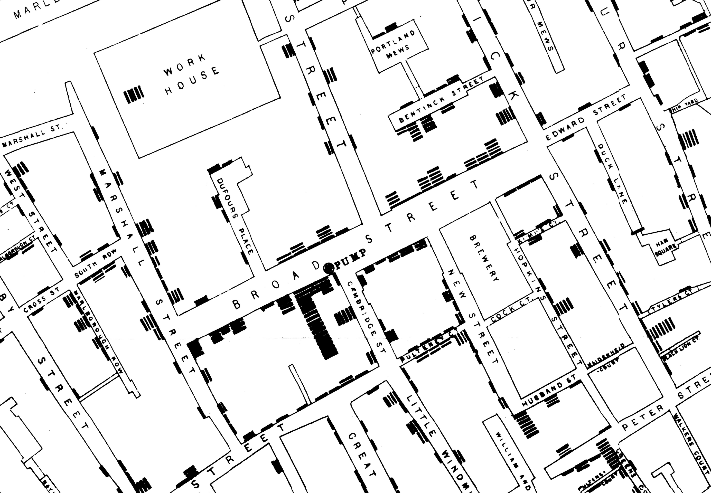

8 Visualization
8.1 A Word About Visualization
Humans are not good with numbers. Look at a spreadsheet full of numbers, and you can’t make any sense, but if the spreadsheet includes graphs ,am ay be you can. Numbers came into existence may be few thousand years ago when humans developed commerce. We genetically aren’t used to it. Life developed vision while insects were around, millions of years ago, so our brain carries all the packages to process vision instantly.
Lot of statistics is about creating graphs, or visualizing data so that we humans can understand it more intuitively than looking at a bunch of numbers. In this chapter you will see how three visualizations helped humans to understand what’s going on without pouring into stream of numbers.
8.2 London Cholera Outbreak
https://en.wikipedia.org/wiki/1854_Broad_Street_cholera_outbreak
It was 1854, and London had a cholera outbreak. None knew how one contracted cholera, and it was thought smelling foul things made you sick. The death tolls were rising and something must be done about it.
A person named John Snow, pictured below, used visualization techniques to find the source of this disease.

Take look at the map below:

If you zoom in, you can see some black bars. Each bar is a dead person due to cholera.
If you see the picture above, you can notice that around a certain pump, there are more deaths. John Snow inferred that Cholera spreads due to contaminated water, and this particular pump was very much contaminated.

To prevent the spread of this disease, he removed the handle of this pump, and cholera deaths decreased. Till this day, the pump whose handle bar is removed stands in London. There is bar nearby that bears the name of John Show.
8.3 Napoleons Invasion of Russia
https://en.wikipedia.org/wiki/French_invasion_of_Russia
Napoleon’s invasion of Russia is a disastrous one. Russians did not really fight Nepoleon, they were smart, they let him reach Moscow and Moscow was deserted. Napoleon waited in Moscow for word of surrender and nothing happened. Napoleon realized that he had been trapped and had to return to France before the onset of winter.

His troops weren’t prepared for winter, and while traveling back many died. The picture above is a great postmortem visualization of his troop numbers. It shows roughly the path the troops tool from France to Moscow. The path is shown in brown, the width of the path is proportional to the strength of the troops. The path traced in black are the path back from Russia to France. You can see how the black path is narrow, representing the reduced troop numbers.
While returning, a lot of troops died in the cold, so the return path in black is traced below the march forward path in brown, and below the return path, you could see the corresponding winter temperatures. You could see while the troops were returning how the temperature dwindled and how the width of the kine shrinks because of it.
This is a genius visualization which gives you lot of information about the troop size, position, the direction they traveled and how the weather affected them. Though we have computers today, I am not sure if we could produce such a good maps with mapping API’s we have.
8.4 Florence Nightingale
https://en.wikipedia.org/wiki/Florence_Nightingale
Florence Nightingale worked for the British Army in the Crimea war. This was the chart she produced which illustrated the cause if death of fighting soldiers.

If you see the above picture, the blue ares in the pie chart dominates. They represent soldiers not dying in war, but they are the count of soldiers who died due to preventable diseases.
The ares of the red wedges represents the deaths from wounds, and black wedges are from other causes.
It’s shocking that when a person goes to war, he may not die fighting, but he may die falling prey to disease.
Florence Nightingale’s illustrations, made the people higher up understand the gravity of the situation, and one can safely say she played some part in promoting hygiene and health in medical practices we follow today which has saved numerous lives.
The point here is the people who we accuse of not understanding the toil of commoners, might understand the gravity of the problem, if the data is presented in a right way.